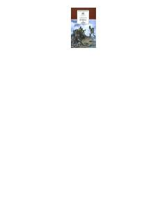

ВИRus adabiyotining buyuk klassik romani bo'lib, urush va tinchlik davridagi insoniy taqdirlarni tasvirlaydi.
Lev Tolstoyning ushbu monumental asari XIX asr boshlaridagi Rossiya jamiyati va Napoleon urushlari davrini qamrab oladi. Roman inson taqdiri, muhabbat, urush va tinchlik kabi abadiy mavzularni chuqur falsafiy tahlil qiladi.